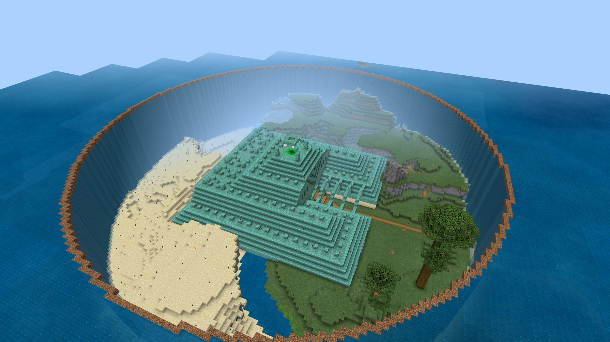
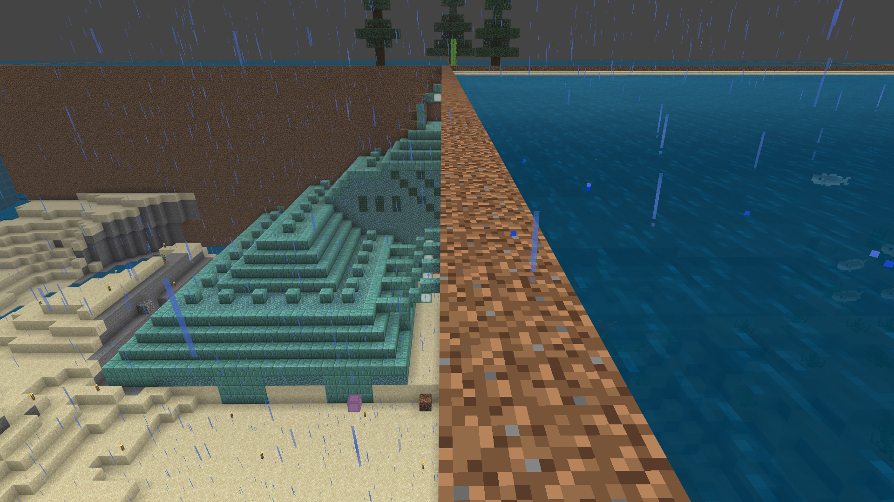
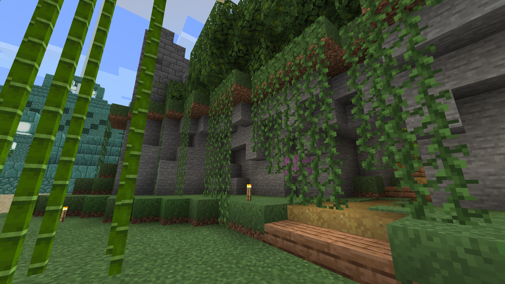
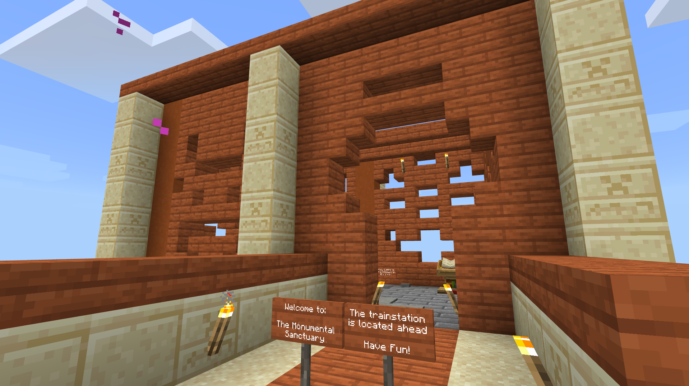
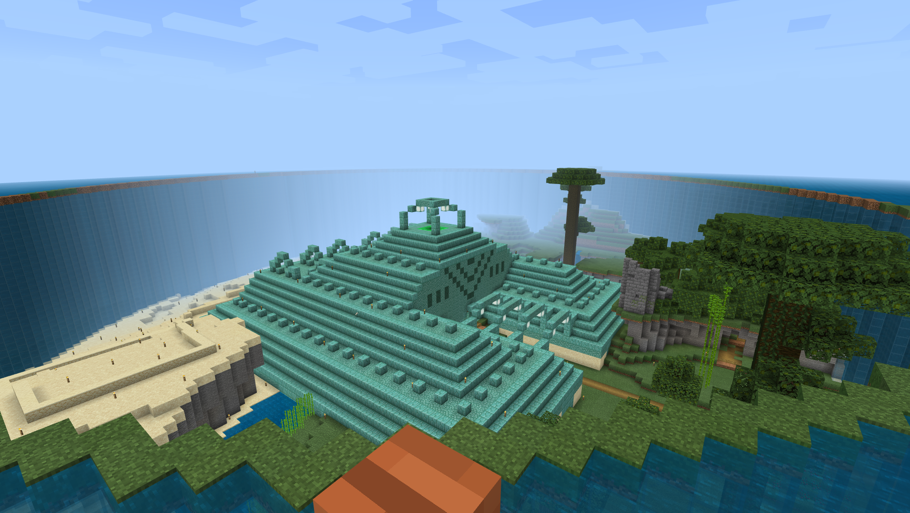
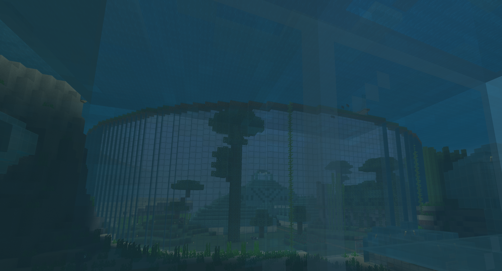

Build projects - Sancturary
The Sancturary was a project I started after I saw a video by a YouTuber who drained an ocean monument. I got inspired to do the same however with a twist. Instead of draining it and just transforming the sand in grass, I chose to only transform half of the sand in grass. And the area that I did transform I also terraformed to make it look a lot better than it naturally could. This was my first project involving terraforming, and man it is so much harder then it looks. The draining took quite long however the terraforming was much more intense and really challenged me. However in the end it did turn out to look quite nice and when I posted in on reddit it even reached the front page!
The Sancturary is located at ().
    